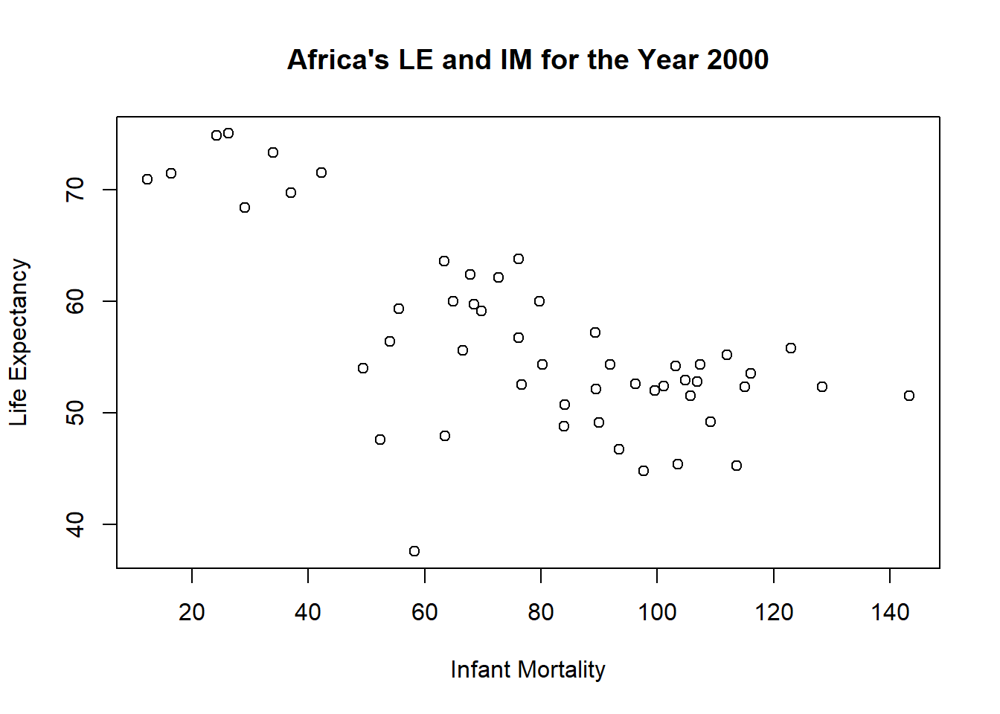
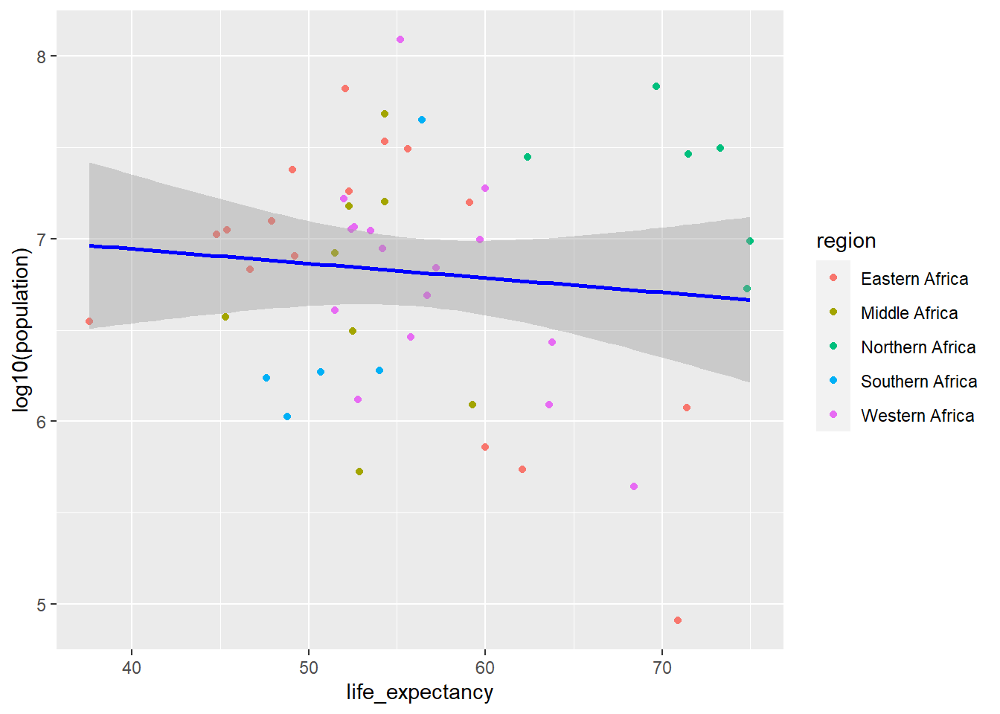
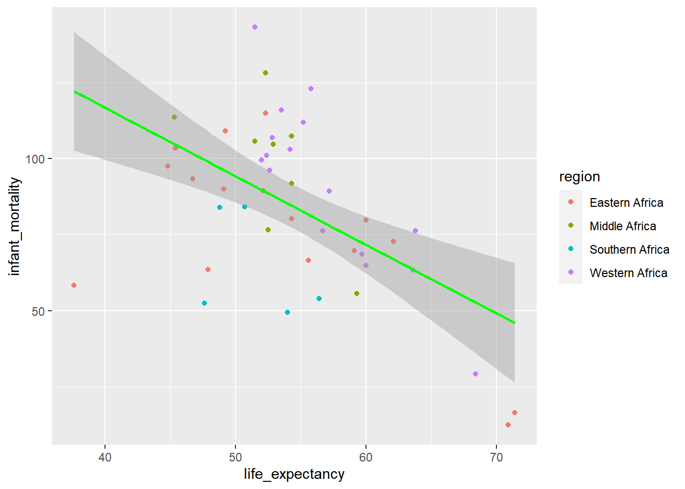
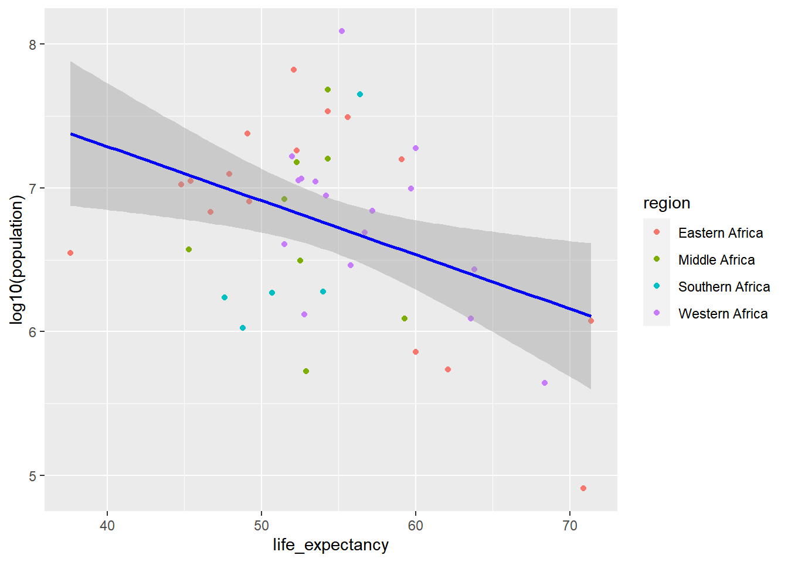

This is the beginning of the loading and checking data exercise where I will install, load, and explore the dslabs package!
NOTE: Use library() to list all of the packages installed on my system
Installing packages
install.packages(“dslabs”)
install.packages(“dplyr”)
Loading packages
library ("dplyr")
Attaching package: 'dplyr'
The following objects are masked from 'package:stats':
filter, lag
The following objects are masked from 'package:base':
intersect, setdiff, setequal, union
library("dslabs")library(ggplot2)
What Does the gapminder Dataset Contain?
Look at help file to see what the dataset gapminder contains help(gapminder). Gapminder includes health and income outcomes for 184 countries from 1960 to 2016.
help(gapminder)
starting httpd help server ... done
Overview of data structure
str(gapminder)
'data.frame': 10545 obs. of 9 variables:
$ country : Factor w/ 185 levels "Albania","Algeria",..: 1 2 3 4 5 6 7 8 9 10 ...
$ year : int 1960 1960 1960 1960 1960 1960 1960 1960 1960 1960 ...
$ infant_mortality: num 115.4 148.2 208 NA 59.9 ...
$ life_expectancy : num 62.9 47.5 36 63 65.4 ...
$ fertility : num 6.19 7.65 7.32 4.43 3.11 4.55 4.82 3.45 2.7 5.57 ...
$ population : num 1636054 11124892 5270844 54681 20619075 ...
$ gdp : num NA 1.38e+10 NA NA 1.08e+11 ...
$ continent : Factor w/ 5 levels "Africa","Americas",..: 4 1 1 2 2 3 2 5 4 3 ...
$ region : Factor w/ 22 levels "Australia and New Zealand",..: 19 11 10 2 15 21 2 1 22 21 ...
Summary of data
summary(gapminder)
country year infant_mortality life_expectancy
Albania : 57 Min. :1960 Min. : 1.50 Min. :13.20
Algeria : 57 1st Qu.:1974 1st Qu.: 16.00 1st Qu.:57.50
Angola : 57 Median :1988 Median : 41.50 Median :67.54
Antigua and Barbuda: 57 Mean :1988 Mean : 55.31 Mean :64.81
Argentina : 57 3rd Qu.:2002 3rd Qu.: 85.10 3rd Qu.:73.00
Armenia : 57 Max. :2016 Max. :276.90 Max. :83.90
(Other) :10203 NA's :1453
fertility population gdp continent
Min. :0.840 Min. :3.124e+04 Min. :4.040e+07 Africa :2907
1st Qu.:2.200 1st Qu.:1.333e+06 1st Qu.:1.846e+09 Americas:2052
Median :3.750 Median :5.009e+06 Median :7.794e+09 Asia :2679
Mean :4.084 Mean :2.701e+07 Mean :1.480e+11 Europe :2223
3rd Qu.:6.000 3rd Qu.:1.523e+07 3rd Qu.:5.540e+10 Oceania : 684
Max. :9.220 Max. :1.376e+09 Max. :1.174e+13
NA's :187 NA's :185 NA's :2972
region
Western Asia :1026
Eastern Africa : 912
Western Africa : 912
Caribbean : 741
South America : 684
Southern Europe: 684
(Other) :5586
Determining the type of object gapminder is via class()
class(gapminder)
[1] "data.frame"
Assigning
I want to create an object (or dataframe) called africadata using an existing dataframe, gapminder, then subset gapminder dataframe using the continent column calling Africa (character string to find)
'data.frame': 2907 obs. of 9 variables:
$ country : Factor w/ 185 levels "Albania","Algeria",..: 2 3 18 22 26 27 29 31 32 33 ...
$ year : int 1960 1960 1960 1960 1960 1960 1960 1960 1960 1960 ...
$ infant_mortality: num 148 208 187 116 161 ...
$ life_expectancy : num 47.5 36 38.3 50.3 35.2 ...
$ fertility : num 7.65 7.32 6.28 6.62 6.29 6.95 5.65 6.89 5.84 6.25 ...
$ population : num 11124892 5270844 2431620 524029 4829291 ...
$ gdp : num 1.38e+10 NA 6.22e+08 1.24e+08 5.97e+08 ...
$ continent : Factor w/ 5 levels "Africa","Americas",..: 1 1 1 1 1 1 1 1 1 1 ...
$ region : Factor w/ 22 levels "Australia and New Zealand",..: 11 10 20 17 20 5 10 20 10 10 ...
summary (africadata)
country year infant_mortality life_expectancy
Algeria : 57 Min. :1960 Min. : 11.40 Min. :13.20
Angola : 57 1st Qu.:1974 1st Qu.: 62.20 1st Qu.:48.23
Benin : 57 Median :1988 Median : 93.40 Median :53.98
Botswana : 57 Mean :1988 Mean : 95.12 Mean :54.38
Burkina Faso: 57 3rd Qu.:2002 3rd Qu.:124.70 3rd Qu.:60.10
Burundi : 57 Max. :2016 Max. :237.40 Max. :77.60
(Other) :2565 NA's :226
fertility population gdp continent
Min. :1.500 Min. : 41538 Min. :4.659e+07 Africa :2907
1st Qu.:5.160 1st Qu.: 1605232 1st Qu.:8.373e+08 Americas: 0
Median :6.160 Median : 5570982 Median :2.448e+09 Asia : 0
Mean :5.851 Mean : 12235961 Mean :9.346e+09 Europe : 0
3rd Qu.:6.860 3rd Qu.: 13888152 3rd Qu.:6.552e+09 Oceania : 0
Max. :8.450 Max. :182201962 Max. :1.935e+11
NA's :51 NA's :51 NA's :637
region
Eastern Africa :912
Western Africa :912
Middle Africa :456
Northern Africa :342
Southern Africa :285
Australia and New Zealand: 0
(Other) : 0
Creating new objects
I want to create an object (df) called imle using an existing df, africadata, then select 2 columns LE and IM
'data.frame': 2907 obs. of 2 variables:
$ life_expectancy : num 47.5 36 38.3 50.3 35.2 ...
$ infant_mortality: num 148 208 187 116 161 ...
summary(imle)
life_expectancy infant_mortality
Min. :13.20 Min. : 11.40
1st Qu.:48.23 1st Qu.: 62.20
Median :53.98 Median : 93.40
Mean :54.38 Mean : 95.12
3rd Qu.:60.10 3rd Qu.:124.70
Max. :77.60 Max. :237.40
NA's :226
str(ple)
'data.frame': 2907 obs. of 2 variables:
$ life_expectancy: num 47.5 36 38.3 50.3 35.2 ...
$ population : num 11124892 5270844 2431620 524029 4829291 ...
summary(ple)
life_expectancy population
Min. :13.20 Min. : 41538
1st Qu.:48.23 1st Qu.: 1605232
Median :53.98 Median : 5570982
Mean :54.38 Mean : 12235961
3rd Qu.:60.10 3rd Qu.: 13888152
Max. :77.60 Max. :182201962
NA's :51
Based on the africadata we generated the “clusters” or “streaks” of data seem to be a population in the the same region of Africa over time. Public health strategies that were implemented (e.g., vaccines, clean water, etc.) may have contributed to the increase in life expectancy and a growing population.
'data.frame': 51 obs. of 9 variables:
$ country : Factor w/ 185 levels "Albania","Algeria",..: 2 3 18 22 26 27 29 31 32 33 ...
$ year : int 2000 2000 2000 2000 2000 2000 2000 2000 2000 2000 ...
$ infant_mortality: num 33.9 128.3 89.3 52.4 96.2 ...
$ life_expectancy : num 73.3 52.3 57.2 47.6 52.6 46.7 54.3 68.4 45.3 51.5 ...
$ fertility : num 2.51 6.84 5.98 3.41 6.59 7.06 5.62 3.7 5.45 7.35 ...
$ population : num 31183658 15058638 6949366 1736579 11607944 ...
$ gdp : num 5.48e+10 9.13e+09 2.25e+09 5.63e+09 2.61e+09 ...
$ continent : Factor w/ 5 levels "Africa","Americas",..: 1 1 1 1 1 1 1 1 1 1 ...
$ region : Factor w/ 22 levels "Australia and New Zealand",..: 11 10 20 17 20 5 10 20 10 10 ...
summary(y2k)
country year infant_mortality life_expectancy
Algeria : 1 Min. :2000 Min. : 12.30 Min. :37.60
Angola : 1 1st Qu.:2000 1st Qu.: 60.80 1st Qu.:51.75
Benin : 1 Median :2000 Median : 80.30 Median :54.30
Botswana : 1 Mean :2000 Mean : 78.93 Mean :56.36
Burkina Faso: 1 3rd Qu.:2000 3rd Qu.:103.30 3rd Qu.:60.00
Burundi : 1 Max. :2000 Max. :143.30 Max. :75.00
(Other) :45
fertility population gdp continent
Min. :1.990 Min. : 81154 Min. :2.019e+08 Africa :51
1st Qu.:4.150 1st Qu.: 2304687 1st Qu.:1.274e+09 Americas: 0
Median :5.550 Median : 8799165 Median :3.238e+09 Asia : 0
Mean :5.156 Mean : 15659800 Mean :1.155e+10 Europe : 0
3rd Qu.:5.960 3rd Qu.: 17391242 3rd Qu.:8.654e+09 Oceania : 0
Max. :7.730 Max. :122876723 Max. :1.329e+11
region
Eastern Africa :16
Western Africa :16
Middle Africa : 8
Northern Africa : 6
Southern Africa : 5
Australia and New Zealand: 0
(Other) : 0
More Plotting
plot_1<-plot(life_expectancy~infant_mortality, data=y2k, main="Africa's LE and IM for the Year 2000", ylab="Life Expectancy", xlab="Infant Mortality")

plot_y2k2<-plot(life_expectancy~population, data=y2k, main="Africa's LE and Population for the Year 2000", ylab="Life Expectancy", xlab="Population", log='x')
Call:
lm(formula = life_expectancy ~ population, data = y2k)
Residuals:
Min 1Q Median 3Q Max
-18.429 -4.602 -2.568 3.800 18.802
Coefficients:
Estimate Std. Error t value Pr(>|t|)
(Intercept) 5.593e+01 1.468e+00 38.097 <2e-16 ***
population 2.756e-08 5.459e-08 0.505 0.616
---
Signif. codes: 0 '***' 0.001 '**' 0.01 '*' 0.05 '.' 0.1 ' ' 1
Residual standard error: 8.524 on 49 degrees of freedom
Multiple R-squared: 0.005176, Adjusted R-squared: -0.01513
F-statistic: 0.2549 on 1 and 49 DF, p-value: 0.6159
What do the p-values tell us?
Based on the p-values for the given fits, IM as a predictor of LE is said to be statistically significant whereas population as a predictor of LE is said to not statistically significant. But p-values?…
Section by Leah Lariscy
I want to see how LE differs between regions in Africa in 2000. I am going to create a boxplot using y2k with region on the x-axis and life_expectancy on the y-axis
From the plot above, I can tell the life expectancy is significantly higher in Northern Africa than in the rest of the continent. Now I am going to plot region vs gdp to see if there is a similar trend happening
Looking at both of these plots, I am hypothesizing that gdp and life expectancy have a positive correlation aka that gdp is a good predictor for life expectancy. I am now going to plot log10(gdp) vs LE and use lm.
# A tibble: 2 × 5
term estimate std.error statistic p.value
<chr> <dbl> <dbl> <dbl> <dbl>
1 (Intercept) 55.9 1.47 38.1 4.51e-38
2 population 0.0000000276 0.0000000546 0.505 6.16e- 1
Plot by region
ggplot(y2k, aes(life_expectancy,log10(population), color=region)) +geom_point() +stat_smooth(method ="lm", col ="blue")
`geom_smooth()` using formula = 'y ~ x'

If you look at this raw data it appears that the North African data may be skewing the results. Now lets remove the North African data and see if we get as strong of a correlation…
y2kNONA <- y2k %>%filter(region =='Eastern Africa'| region =='Middle Africa'| region =='Southern Africa'| region =='Western Africa')
Data Plots
ggplot(y2kNONA, aes(life_expectancy, infant_mortality, color=region)) +geom_point() +stat_smooth(method ="lm", col ="green")
`geom_smooth()` using formula = 'y ~ x'

ggplot(y2kNONA, aes(life_expectancy,log10(population), color=region)) +geom_point() +stat_smooth(method ="lm", col ="blue")
`geom_smooth()` using formula = 'y ~ x'

Now with Northern Africa removed from the model there does appear a negative relationship between life expectancy and population size, similar to what is seen before and after the removal of Northern Africa from the data when evaluating life expectancy and infant mortality.